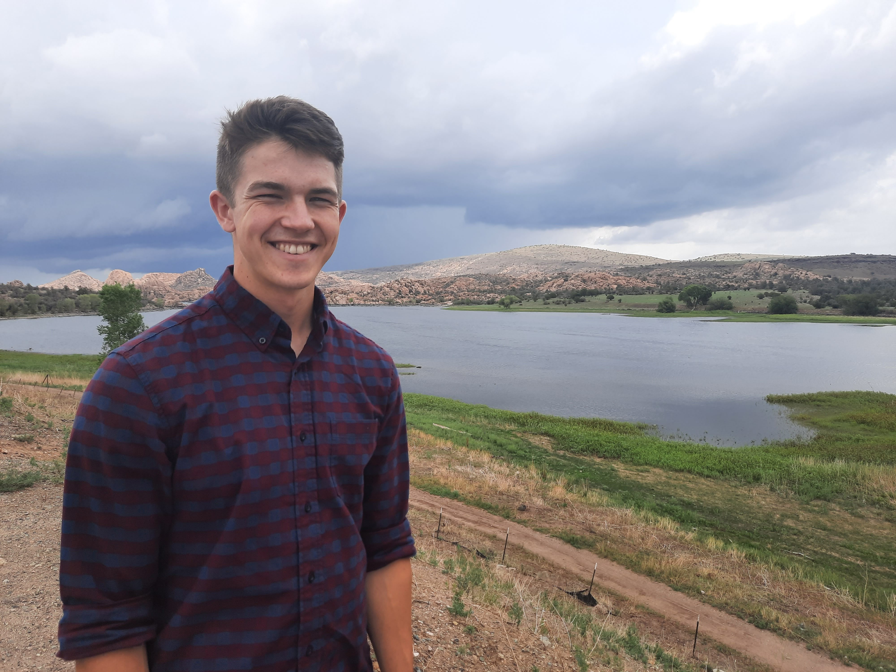
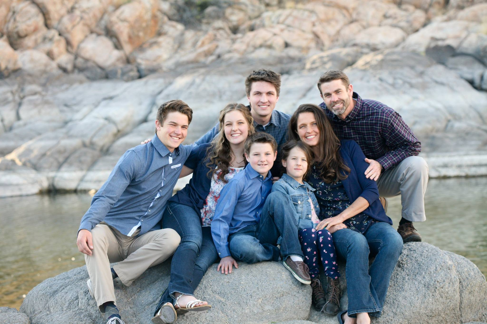

I was born up east, enjoyed my early childhood in the South, and grew up in the West.
- Hometown

My name is Jared Smith, I grew up in Prescott, Arizona, a small city just two hours north of Pheonix. However, I was born in Cleveland, Ohio when Mmy father was in dental school. We later moved to Gainsville, Florida when he did his residency. We moved to Prescott so he could start his practice while I was still young.
- Family

I am the second of five children. I have two brothers and two sisters. I am currently attending Brigham Young University in Provo, Utah.
- Mission
I served a mission for the Church of Jesus Christ of Latter-day Saints in Bulgaria for 2 years from 2018-2020.
- College
I am currently attending Brigham Young University, applying to the Strategy program and minoring in Arabic.
Here is some video footage of my favorite city that I served in called Sliven.
Phone: (900) 900-9000
Email: jaredcarlsmith@gmail.com